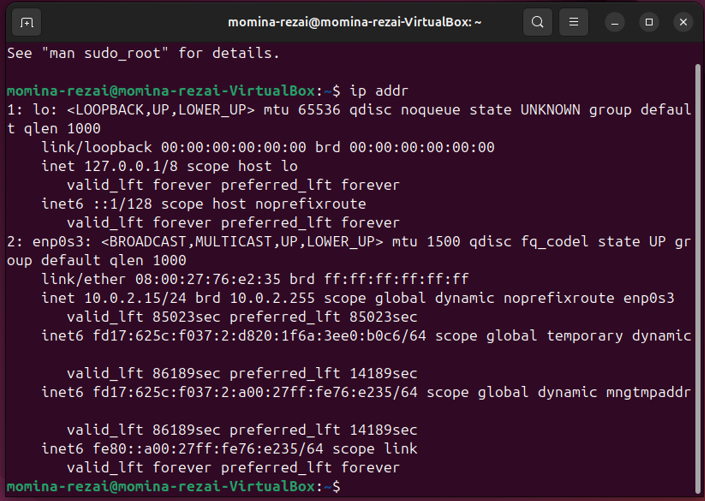
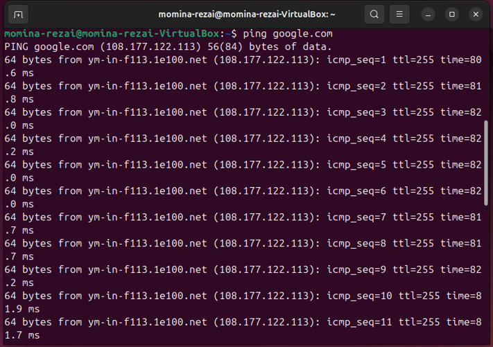
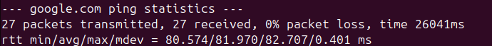
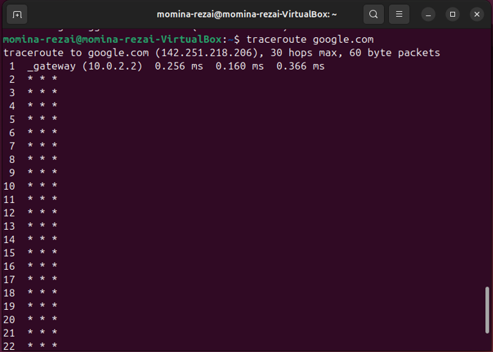
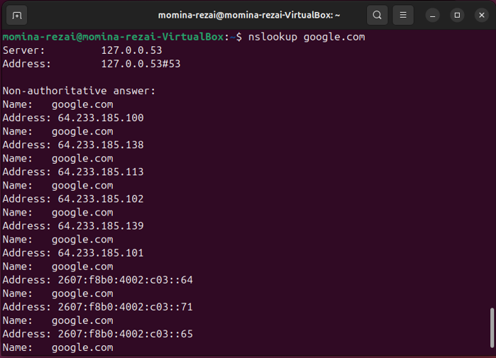
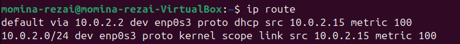

Linux Networking Basics Lab (Ubuntu + VirtualBox)
This lab explores a few fundamental Linux networking tools used to verify connectivity, analyze network routes, and test DNS resolution. The goal of the lab was to gain hands on experience with common networking commands used by system administrators and network engineers.
Lab Environment
Before running any networking commands, I first created a controlled testing environment using virtualization.
- Host OS: Windows
- Virtualization: Oracle VirtualBox
- Guest OS: Ubuntu 24.04 LTS
- Network Mode: NAT
Using NAT networking allows the virtual machine to access the internet through the host computer's network connection while remaining isolated from the host system.
Checking Network Interfaces
Before testing connectivity, it is important to verify that the system has an active network interface and an assigned IP address.
The ip addr command displays information about all network interfaces,
including IP addresses, MAC addresses, and operational state.

From the output, several important details can be observed.
-
lo (loopback interface)
Used for internal communication within the system using the address 127.0.0.1. The /8 after the address represents CIDR notation, which indicates the network portion of the address. -
enp0s3 (primary interface)
Main network interface for the virtual machine. -
IPv4 Address: 10.0.2.15
Assigned dynamically by the VirtualBox NAT network. The /24 following the address is also CIDR notation and represents the subnet used by the virtual network. -
Interface State: UP
Indicates the interface is active and functioning.
CIDR notation is something I'm currently learning more about while studying networking fundamentals and subnetting.
Testing Network Connectivity with Ping
The next step was verifying internet connectivity using the ping command.
ping google.com
The ping command sends ICMP (Internet Control Message Protocol) echo requests to a target host. If the host is reachable, it responds with echo replies as seen in my terminal below.

I pressed ctrl + c to stop the ICMP packets and received ping statistics from google's server. Which shows the output of packets transmitted, packets received, the packet loss percentage and round trip times.

Analyzing the Network Path with Traceroute
Traceroute identifies the routers (hops) that packets pass through when traveling to a remote host.
Traceroute was not installed by default, so it was installed using:
sudo apt install traceroute
Then the command was executed:
traceroute google.com

The first hop displayed in the output corresponds to the VirtualBox NAT gateway:
10.0.2.2This is the internal gateway used by VirtualBox to route traffic from the virtual machine to the host system's network.
The remaining hops represent routers within the ISP (Internet Service Provider)
and internet infrastructure that forward packets toward the destination server.
Traceroute is particularly useful for diagnosing network latency issues or identifying where connectivity problems occur along a network path.
Some hops displayed three stars: * * *, which indicates that the router at that hop did not respond to the traceroute
probes within the timeout period. This can occur when routers are configured to block or ignore traceroute requests for
security or performance.
Testing DNS Resolution
In addition to connectivity testing, it's important to verify that domain name resolution is functioning properly. DNS (Domain Name System) is responsible for translating readable domain names like my website or my example google.com into IP addresses. This is tested using the command:
nslookup
The output shows the DNS server used for the query and the IP address associated with the domain name. This confirms that DNS resolution is working correctly within the virtual machine.
Checking the Routing Table
Another useful networking command is:
ip route
This command displays the system's routing table, which determines how packets are forwarded to different networks. It specifies which gateway or interface should be used to reach specific destinations.

The routing table includes the default gateway:
10.0.2.2
This gateway represents the VirtualBox NAT router that forwards traffic from the virtual machine to external networks.
What I Learned
Through this lab I learned how Linux networking tools can be used to troubleshoot connectivity and understand how systems communicate across networks.
- How to verify network interfaces using
ip addr - How to test connectivity with
ping - How to analyze network routes with
traceroute - How DNS resolution works using
nslookup - How packets are routed using the routing table
ip route
Sources
- https://www.geeksforgeeks.org/linux-unix/network-configuration-trouble-shooting-commands-linux/
- https://www.thewindowsclub.com/how-to-allow-pings-icmp-echo-requests-through-windows-firewall
- https://www.baeldung.com/linux/traceroute-three-stars
- https://www.golinuxcloud.com/ip-route-command-in-linux/